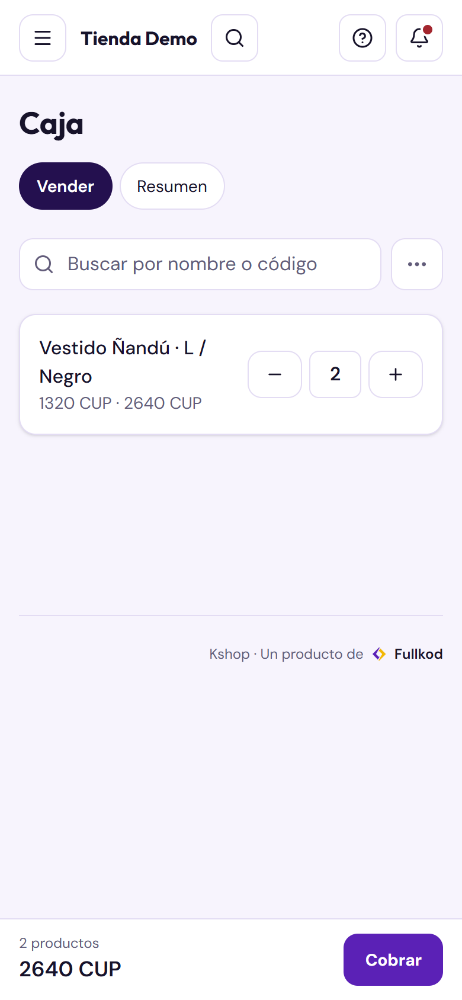

PLAN {{PLAN}}
Tu negocio
en la web.
Manual del panel de Kshop: todo lo que puedes hacer desde la computadora o el navegador del teléfono.
En este manual
- Entrar y el menú
- Inicio
- La caja: vender, cobrar, resumen y cierres
- Pedidos
- Pedidos de la tienda online y clientes
- Productos e Importar Excel
- Tu tienda online
- Entregas y métodos de pago
- Ofertas
- Cupones y Avisos WhatsApp
- Apariencia y Dominio propio
- Finanzas, Almacenes y Monedas
- La app de tu tienda
- Ventas de hoy, Equipo y Plan
- Quién puede hacer qué
- Reglas de oro y ayuda
Antes de empezar
Entrar al panel
El panel de tu negocio se abre en cualquier navegador: Chrome, Safari, Edge… en la computadora o en el teléfono.
- Abre la dirección de tu negocio con /admin al final. Te la damos al empezar. Ejemplo: minegocio.kshop.fullkod.com/admin.
- Escribe tu correo y tu contraseña y toca Entrar
- ¿No te acuerdas de la contraseña? Toca «¿Olvidaste tu contraseña?» y sigue los pasos.
- Para salir, abajo del menú está tu nombre y, al lado, el botón de cerrar sesión.
Guárdala en favoritos (o «Añadir a pantalla de inicio» en el teléfono) para entrar con un toque.
Cada persona entra con su usuario. Así queda guardado quién vendió y quién cambió cada cosa. No compartas tu contraseña.
Web o app: la web necesita internet. Si en tu local la conexión falla, vende con Kshop Admin en un Android: guarda las ventas sin conexión y las sube solas. La descargas en App móvil › «Descargar Kshop Admin». Todo lo que vende la app aparece también aquí.
Claro u oscuro
Abajo del menú hay tres botones para ver el panel en modo claro, oscuro o como esté tu equipo.
Orientarte
El menú
A la izquierda en la computadora. En el teléfono, toca el botón ☰ de arriba.
| Inicio | Cómo va el día y lo que tienes por hacer. |
| Pedidos | Todas las ventas: las de la caja (Mostrador), las que apuntas a mano y las de la tienda online. |
| Clientes | Quienes te han comprado con su nombre y teléfono. |
| Entregas | A dónde entregas, cómo y cuánto cuesta. |
| Ofertas | Rebajas con el precio tachado en la tienda. |
| Cupones | Códigos de descuento. |
| Avisos WhatsApp | Avisos a ti y a tus clientes. |
| Caja | Vender, ver el resumen y cerrar el día. |
| Productos | Lo que vendes: precio, costo, cantidad, fotos y categorías. |
| Importar Excel | Subir o actualizar muchos productos de una vez. |
| Almacenes · Monedas | Stock por almacén; vender en USD y EUR con tu tasa. |
| Apariencia · Dominio | Cómo se ve tu tienda y tu propio dominio. |
| App móvil | La app de tu tienda para tus clientes, y Kshop Admin para ti. |
| Ventas de hoy | Lo vendido y cobrado hoy, de un vistazo. |
| Finanzas | Ventas, costos, gastos y ganancia de cualquier periodo. |
| Plan · Equipo | Tu plan y tu factura; quién trabaja contigo. |
¿Ves opciones con candado (BASE o PRO)? Son de otros planes. Si un día las quieres, escríbenos.
Arriba tienes el buscador (pedidos, productos y clientes; en la computadora también con Ctrl K), el botón ? con la ayuda de esa pantalla, «Ver tienda» para abrir tu tienda online y un botón violeta con la acción más usada de la pantalla (por ejemplo Nuevo pedido).
Lo primero que ves
Inicio
Un resumen del negocio. Arriba a la derecha eliges Hoy, 7 días o Mes.
Inicio de la tienda de ejemplo.
| Vendido hoy | Lo que sumaron las ventas, comparado con ayer. |
| Cobrado | El dinero que de verdad entró. |
| Por cobrar | Pedidos abiertos que todavía no se han pagado. |
| Ventas de la semana | Una barra por día para ver qué días se vende más. |
| Por hacer | Avisos: pedidos por confirmar y productos con poco stock (tócalo para ver cuáles reponer). |
| Últimos pedidos | Las ventas más recientes. «Ver todos» te lleva a Pedidos. |
Caja
Vender en el mostrador
En el menú toca Caja. Arriba hay tres pestañas: Vender Resumen Cierres
- En el buscador escribe el nombre o el código del producto.
- Toca el producto: entra al ticket.
- Cambia la cantidad con − y +, o toca el número y escríbelo. Con − hasta cero, el producto sale del ticket.
- Abajo ves cuántos productos llevas y el total. Para cobrar, toca Cobrar
Por libra, kilo o litro
Si el producto se vende por peso, escribe lo que marca la pesa, con coma: 1,37.
Si el cliente pide «100 pesos de queso», toca el botón de la unidad (lb) junto a la cantidad y escribe 100: la cantidad se calcula sola.
A otro precio
Toca el producto en el ticket y escribe el «Precio de venta» y, si quieres, el motivo. El dueño y el administrador tienen además «Al costo» y un aviso si queda por debajo del costo.

La caja de la tienda de ejemplo, en el teléfono.
Si te vas a «Resumen» o «Cierres» en medio de una venta, el ticket te espera al volver a «Vender».
Caja
Cobrar y dar el vuelto
Después de tocar Cobrar:
- En «Moneda que entrega» elige con qué paga el cliente: CUP, USD o EUR.
- En «Cantidad que entrega» escribe el dinero que te dio. Kshop te dice el vuelto.
- Si paga en otra moneda, Kshop pone la tasa; la puedes cambiar ahí mismo.
- ¿Te da menos de lo que cuesta? Toca Añadir pago y apunta el resto (por ejemplo, una parte en USD y otra en CUP).
- En «Método» marca si fue efectivo o transferencia.
- Toca Confirmar venta
¿Qué pasa al confirmar? La venta queda como un pedido de «Mostrador», ya entregado. El stock baja al momento y la venta aparece en Pedidos, en Ventas de hoy y en Caja › Resumen.
No hace falta el nombre ni el teléfono del cliente para vender en la caja.
Me equivoqué en una venta ya confirmada
- Ve a Pedidos y toca el filtro Mostrador
- Abre esa venta y toca Cancelar. Kshop te pide confirmarlo.
- El stock vuelve. Haz la venta de nuevo, bien.
Caja
Resumen y cierre del día
Resumen
En Caja › Resumen eliges Hoy, 7 días o 30 días y ves cuántas ventas hubo, el dinero en caja por moneda, las canceladas, las tasas usadas y las ventas «Para revisar» (por ejemplo, vendidas a otro precio). Las ventas de Kshop Admin también salen aquí, con la hora en que se vendieron.
Cerrar el día
Se cierra una vez al terminar el día y es de todo el local: entran las ventas de todos, desde la web y desde los teléfonos.
- En Caja › Vender toca ⋯ (al lado del buscador) y luego Cerrar el día
- Kshop te dice cuánto efectivo debe haber (el fondo, más lo cobrado en efectivo, menos los vueltos) y cuánto vendió cada persona. Las transferencias salen aparte, para revisarlas en el banco.
- Cuenta el dinero y escribe lo contado en cada moneda.
- Verás si cuadra, si sobra o si falta. Pon una nota si hace falta y toca Cerrar el día
Un cierre no se puede cambiar. Si alguien vende después de cerrar, esa venta va a un segundo cierre del mismo día. Las ventas de días que nadie cerró entran en el próximo cierre.
Cierres
En Caja › Cierres está cada cierre: lo esperado, lo contado, la diferencia y «Ver sus ventas» (en la página siguiente). El dueño y el administrador ven además el costo y la ganancia de cada cierre y «Ganancia por producto». Los productos vendidos sin costo van aparte: ponles el costo y, al volver al cierre, ya se cuentan.
Fondo de caja: el dinero en cambio con el que abres. El dueño o el administrador lo pone una vez en Cierres. Si un día abres con otro fondo, cámbialo al cerrar.
Cierre por WhatsApp: pon tu teléfono en Avisos WhatsApp › Contactos con «Recibe el cierre de caja de cada día» y te llegará el cuadre con la ganancia.
Caja
Qué se vendió en un cierre
- En Caja › Cierres pulsa Ver sus ventas en el cierre. Salen todas sus ventas, la más nueva primero, cada una con la hora, quién vendió, el total, cómo se pagó y sus productos.
- En «Buscar producto» escribe el nombre o el código, por ejemplo aceite. Quedan solo las ventas que lo llevan, con la línea marcada, y arriba cuántas ventas son y cuánto se vendió de cada producto. Las anuladas salen tachadas y no se suman.
- Toca una venta para abrir el pedido. Al volver atrás sigues en la misma lista, con la misma búsqueda y en el mismo punto.
Un producto en todos los cierres
En Caja › Cierres pulsa «Buscar un producto en todos los cierres», escríbelo y elígelo. Salen sus ventas día por día, con el cierre de cada una o «Sin cerrar». «Ver días anteriores» trae 30 días más, y «Ver las ventas de ese cierre» abre el cierre ya filtrado por ese producto.
Cierres antiguos: al final de la lista, «Ver cierres anteriores» trae los de más de 30 días, tantas veces como haga falta.
Dueño y administrador: en «Ganancia por producto», tocar un producto abre las ventas del cierre que lo llevan.
Ventas
Pedidos
Arriba hay cuatro pestañas: Pedidos, Nuevo pedido, Clientes y Métodos de pago.
La lista
Los filtros te dejan ver los pedidos por estado: Pendientes, Pagados, En preparación, Enviados, Entregados, Cancelados y Mostrador (las ventas de la caja). Busca por número, nombre o teléfono. Toca un pedido para ver sus productos, sus pagos, quién lo hizo y su historial.
Nuevo pedido (encargos)
Para lo que te piden por WhatsApp o por teléfono:
- Busca los productos y toca Añadir en cada uno. Para otro precio, toca el importe y escribe el «Precio de venta».
- Escribe el teléfono y el nombre del cliente.
- Elige la zona, el método de entrega y el método de pago y, si quieres, un «Descuento manual» con su motivo.
- Toca Crear pedido. Después lo llevas como cualquier pedido: Confirmar, Registrar pago y hasta Entregado.
Métodos de pago
Toca Nuevo método, ponle nombre (efectivo, transferencia, Zelle…) y escribe las «Instrucciones» que verá el cliente al hacer el pedido: número de tarjeta, a quién transferir…. Son los que salen al cobrar y al registrar un pago. Desmarca «Activo» para dejar de usarlo sin borrarlo.
Tienda online
Me llegó un pedido
Cada pedido de tu tienda entra en Pedidos como «Por confirmar». El número junto a Pedidos en el menú dice cuántos hay; los de más de 48 h llevan la marca «Más de 48 h».
- Abre el pedido y pulsa WhatsApp al cliente para hablar con él sin copiar su número.
- Con todo hablado, pulsa Confirmar. Si la entrega era «a convenir», Kshop te pide antes el precio del envío.
- Cuando te paguen, pulsa Registrar pago (moneda, método y, si quieres, el comprobante) o «Marcar pagado».
- Después «Preparar», «Enviar» y «Entregado», según avance.
«Nota interna» es para lo que el cliente no debe ver (por ejemplo, quién lo lleva). «Cancelar» devuelve el stock; un pedido enviado o entregado ya no se cancela.
Clientes
En Clientes están quienes tienen cuenta en tu tienda (los que compran sin cuenta salen en sus pedidos). Si alguien olvidó su contraseña, «Código de recuperación» te da un código para mandárselo por WhatsApp. Si alguien hace pedidos falsos, «Bloquear».
Catálogo
Productos
En Productos está todo lo que vendes. Arriba hay pestañas como Categorías, Marcas, Colecciones y Tipos de producto.
Crear un producto
- Toca Nuevo producto y elige el tipo (por ejemplo «General», sin variantes, o «Ropa» con talla y color).
- Escribe el nombre. La categoría y la descripción son opcionales. El SKU (código) se crea solo si lo dejas vacío.
- En «Se vende por» elige Unidad, o Libra, Kilogramo, Litro… El precio pasa a ser por esa unidad.
- Pon el precio, el costo (solo lo ve tu equipo, nunca el cliente) y la cantidad (stock). Con variantes, «Generar variantes» y una fila por cada una.
- Toca Guardar: vuelves a la lista. Las fotos se suben abriendo el producto otra vez; la primera es la que se ve en la tienda.
«Calcular», al lado del costo, abre la calculadora: le dices lo que te costó el paquete y cuántas unidades trae, y te propone el precio con el margen que quieras.
Estados
| Publicado | Se vende y sale en la tienda online. Es como empieza un producto nuevo. |
| Borrador | Para terminarlo después. |
| Archivado | Ya no lo vendes, pero no se pierde: los pedidos viejos lo conservan. |
Costos en la lista (dueño y administrador): la columna «Costo» enseña el costo y el margen de cada producto, y se cambia ahí mismo (con variantes, «Editar»). El filtro «Sin costo» deja los que no lo tienen: sin costo, su ganancia no se cuenta.
Ordena tu catálogo: las categorías (hasta 3 niveles) y las marcas con foto o logo salen en la portada de tu tienda; una colección junta productos de distintas categorías (Novedades, Verano…) y puede llenarse sola con sus reglas.
Catálogo · dueño y administrador
Importar Excel
Para subir muchos productos de una vez, o cambiar muchos precios y cantidades.
- Elige el tipo de producto y toca Descargar plantilla. Para cambiar lo que ya tienes, mejor Exportar productos: te baja tu catálogo en Excel.
- Rellénalo en Excel o en Google Sheets y guárdalo como .xlsx. Una fila por producto (o por variante): nombre, categoría, unidad, precio, costo, stock, enlaces de las fotos…
- Súbelo y elige qué hacer con los que ya existen: dejarlos como están o actualizarlos con los datos del Excel. Toca Revisar archivo
- Mira la vista previa. Las filas con error no se suben: corrígelas y vuelve a subir el archivo. Si todo está bien, confirma.
Deja marcada «Crear las categorías… que falten» para no tener que crearlas antes.
Tienda online
Tu tienda online
Tus clientes ven tus productos publicados en tu dirección de Kshop (por ejemplo minegocio.kshop.fullkod.com) o en tu dominio propio, eligen, y te mandan el pedido. Llega a Pedidos y te avisa por WhatsApp.
- Pulsa Ver tienda arriba para verla como un cliente.
- Copia la dirección y pásala por WhatsApp, en tus estados, en tus grupos o impresa.
- Revisa que tus productos tengan foto, precio y stock: los «Publicados» salen en la tienda.
Entregas
Las zonas dicen a dónde entregas; los métodos de entrega, cómo y cuánto cuesta.
- En Entregas › Zonas pulsa «Nueva zona» por cada municipio o área donde entregas.
- En Métodos de entrega pulsa «Nuevo método»: el tipo (mensajería con precio, recogida o «a convenir»), la zona, el precio y los días.
- Para que recojan en tu local, marca un almacén como «Punto de recogida para clientes» (Productos › Almacenes) y crea un método de recogida con ese punto.
Métodos de pago: en Pedidos › Métodos de pago escribe las instrucciones que verá el cliente (tarjeta, a quién transferir, cuándo se paga) y en qué monedas acepta cada uno.
Vender más
Ofertas y la app de tu tienda
Ofertas
Una oferta baja el precio sola, sin código: el cliente ve el precio tachado mientras dure.
- En Ofertas pulsa Nueva promoción
- Escribe el nombre (lo ve el cliente) y elige a qué se aplica: una categoría, una colección, una marca o productos sueltos.
- Elige porcentaje o cantidad fija, el valor, y cuándo empieza y termina. Pulsa «Guardar».
Para pausarla sin borrarla, desmarca «Activa». Si a un producto le tocan varias, se aplica la que deja el precio más bajo.
La app de tu tienda
- En App móvil pulsa Pedir mi app. La preparamos con tu nombre y tu logo; mientras tanto la verás como «Pedida».
- Cuando esté «Publicada», comparte la página de descarga por WhatsApp, en tus redes o impresa con el código QR. Los clientes con Android también ven un aviso en tu tienda para descargarla.
Plan Pro
Cupones y Avisos WhatsApp
Cupones
Un cupón es un código que el cliente escribe en el carrito para llevarse un descuento.
- En Cupones pulsa Nuevo cupón
- Escribe el código (por ejemplo BIENVENIDA10) y el nombre, y elige de qué se descuenta y cuánto. Para envío gratis: 100 % sobre el envío.
- Si quieres, limita productos, un mínimo de productos y los usos (en total y por cliente). Pulsa «Guardar» y comparte el código.
Avisos WhatsApp
Kshop manda avisos desde su número: a ti, cuando entra un pedido o un pago, y al cliente, cuando su pedido cambia de estado.
- En Contactos pulsa «Nuevo contacto» y añade los teléfonos que deben recibir los pedidos. Marca «Recibe el cierre de caja de cada día» en el del dueño.
- En Mensajes pulsa «Editar» en un aviso para cambiar su texto o desactivarlo; «Volver al texto de Kshop» deshace tus cambios.
- En Historial ves cada aviso enviado. Si uno falló: «Reintentar» o «Abrir en WhatsApp».
Plan Pro
Apariencia y Dominio propio
Apariencia
| Tema | Los colores y el estilo de tu tienda. |
| Portada | Elige el «Tipo» (carrusel, categorías, productos, beneficios, oferta con cuenta atrás…) y pulsa «Añadir sección». Ordénalas con las flechas y «Editar» para su contenido. |
| Banners | Las imágenes grandes de arriba. |
| Menús | Los enlaces de arriba y las columnas del pie («Añadir columna o enlace»). |
| Páginas | Textos fijos: quiénes somos, envíos, devoluciones, preguntas frecuentes. Con barra de formato y vista previa. |
Si Apariencia lleva la marca «Admin», la configuramos nosotros: pídenos los cambios por WhatsApp.
Dominio propio
- Compra el dominio donde prefieras (por ejemplo mitienda.com). En Dominio propio escríbelo sin «www» y pulsa «Conectar dominio».
- Kshop te muestra unos registros (Tipo, Nombre, Valor): cópialos en la configuración DNS de donde compraste el dominio.
- Pulsa «Comprobar». Puede tardar unas horas; cuando esté, pasa a «Activo».
El panel sigue en tu dirección de Kshop; el dominio propio es para tus clientes.
Plan Pro
Finanzas, Almacenes y Monedas
Finanzas
| Resumen | Elige el periodo: lo vendido, lo cobrado, lo pendiente, el margen bruto, los gastos y la ganancia neta, y el cierre de cada día. |
| Gastos | «Añadir gasto» para lo que pagas (alquiler, transporte…): se resta de la ganancia. |
| Margen | Cuánto dejó cada producto o categoría. |
| Desglose | Ventas por método de pago, zona, canal y moneda. |
| Inventario | Unidades y su valor a costo y a precio de venta; lo agotado y lo que tiene pocas unidades. |
«Ver todo en» pasa las cifras a otra moneda; «Exportar a Excel» descarga el periodo.
Almacenes
Crea cada almacén en Productos › Almacenes. En el módulo Almacenes: «Resumen» (unidades por almacén), «Traspasar» mercancía de uno a otro y «Movimientos» (cada entrada y salida).
Monedas
Activa «Vender en …» en cada moneda y pon su tasa; «Actualizar tasa» cuando cambie (o «Usar esta tasa» si Kshop te sugiere la del día). Los precios se calculan solos; si quieres uno fijo, ponlo en «Precios en otras monedas» del producto. El «Historial de tasas» guarda cada cambio.
Negocio
Ventas de hoy, Equipo y Plan
Ventas de hoy
Lo del día de un vistazo: cuántos pedidos, cuánto se vendió y cuánto se cobró, por moneda.
Equipo (dueño y administrador)
- Toca Invitar persona, escribe su correo y elige el rol: Empleado o Administrador.
- Kshop te da un enlace: mándaselo por WhatsApp con el botón que aparece. Con él crea su contraseña y entra.
- Para quitar a alguien, toca «Quitar» en su fila. Sus ventas se quedan como estaban.
El plan {{PLAN}} incluye {{EQUIPO}} personas además del dueño y {{PRODUCTOS}}.
Plan y facturación (dueño y administrador)
Tu plan, lo que usas de él (productos y personas), la próxima factura y cómo pagarla. El botón «Escribir a Kshop por WhatsApp» sirve para avisar de que pagaste o para preguntar. Si quieres algo de otro plan, pulsa «Solicitar»: se abre WhatsApp con el mensaje ya escrito. Kshop cobra a mano: no hace falta tarjeta. La primera factura de una tienda nueva incluye la puesta en marcha (crear la tienda y cargar los datos), una sola vez.
Permisos
Quién puede hacer qué
Hay tres roles. El dueño es quien abrió el negocio en Kshop.
| Dueño | Administrador | Empleado |
|---|
| Vender en la caja y cerrar el día | ✓ | ✓ | ✓ |
| Ver, crear y cancelar pedidos | ✓ | ✓ | ✓ |
| Vender a otro precio | ✓ | ✓ | ✓ |
| «Al costo» y aviso de venta bajo el costo | ✓ | ✓ | — |
| Crear y cambiar productos y sus fotos | ✓ | ✓ | ✓ |
| Ver y cambiar costos, ganancia de los cierres y fondo de caja | ✓ | ✓ | — |
| Importar Excel | ✓ | ✓ | — |
| Entregas, métodos de pago y ofertas, cupones, avisos, apariencia, monedas y dominio | ✓ | ✓ | — |
| Finanzas | ✓ | ✓ | — |
| Equipo y Plan y facturación | ✓ | ✓ | — |
| Nombrar administradores | ✓ | — | — |
Consejo: da el rol de Administrador solo a quien lleve las cuentas contigo. Para quien solo vende, Empleado.
Para no fallar
Reglas de oro
- Todo lo que sale del local, se vende en la caja. Si no, el stock y el cierre no cuadran.
- Cada uno con su usuario. Así se sabe quién vendió qué.
- Cierra el día todos los días, contando el dinero de verdad.
- Ponle el costo a cada producto para saber cuánto ganas.
- Cuando cambie un precio, cámbialo en Kshop ese mismo día.
- Contesta los pedidos online el mismo día y mantén al día el stock: lo que se agota no se puede pedir.
- ¿Se fue internet? Sigue vendiendo con Kshop Admin en el Android; la web necesita conexión.
¿Dudas?
• En cada pantalla, el botón ? abre la ayuda de esa pantalla. En el menú, Ayuda tiene todas las guías y «Tu primer día».
• O escríbenos por WhatsApp: +1 575 263 9686. Te ayudamos.
Kshop · Un producto de Fullkod